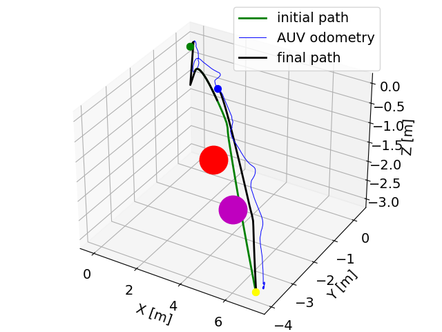
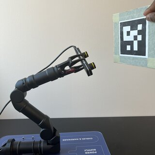
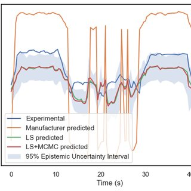
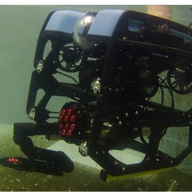

|
Edward Morgan A Ph.D. student in Mechanical Engineering with a minor in Computer Science at Louisiana State University, working at the iCoreLab under the guidance of Dr. Corina Barbalata. My research focuses on the dynamics, control, and autonomy of underwater robotic systems, aiming to develop adaptable solutions for complex marine environments. I hold a B.Sc. in Mechanical Engineering from Kwame Nkrumah University of Science and Technology and have professional experience as a Software Engineer at Standard Bank. Proficient in C++, Python, MATLAB, ROS, and deep learning, I have been honored with the NSF Career Award and have published in leading journals and presented at international conferences. Beyond my research, I mentor aspiring engineers and actively engage in STEM outreach programs to inspire the next generation of innovators. |

|
ResearchMy research interests mainly include multibody kinematics & dynamic modeling, optimal control, state estimation, system identification, trajectory planning and optimisation, with a touch of reinforcement learning. |
|  |
Collision Free Path Planning for Underwater Vehicles in Rapidly Changing Environments
M Pesson, Edward Morgan, C Barbalata, IEEE International Conference on Advanced Intelligent Mechatronics (AIM), 2024 asme This paper presents an obstacle avoidance path planning algorithm designed to generate smooth paths for underwater robotic systems that operate in dynamic environments. Using the kinematics of the system, an initial path is generated which is further optimized considering the constraints of the system and the environment. The correlation between path states is embedded into a kernel used throughout the optimization. This produces a more informative optimization process that leads to changes in one state based on all other states. However, the use of this correlation between path states may lead to an exhaustive computational effort for highly dimensional systems. Therefore, the proposed approach, named AmaxGPMP, introduces a strategy capable of reducing the needed information to develop these kernels while accurately describing the correlation among states, hence decreasing the computation time |
|  |
Model-Based Visual Control for Robotic Manipulators Using Udwadia Kalaba Formulation
Edward Morgan, W Ard, C Barbalata, ASME International Mechanical Engineering Congress and Exposition, 2023 asme This work presents the development of a model-based visual control strategy for robotic manipulators performing target tracking. The proposed approach leverages fiducial-based techniques for target identification with the Udwadia-Kalaba (UK) formulation for constrained robotic motion control. Using Baumgarte’s approach leads to a model-based visual control strategy capable of stable behavior when discontinuities are present in the desired trajectory that the robot has to follow, as well as when there are uncertainties in the dynamic model of the system. The control strategy is tested in simulation with a 4-DOF Reach Alpha 5 manipulator using real-world visual target tracking. The qualitative and quantitative evaluation of the strategy shows its capabilities in accurately tracking the desired trajectories. |
|  |
A probabilistic framework for hydrodynamic parameter estimation for underwater manipulators
Edward Morgan, W Ard, C Barbalata, OCEANS 2023-MTS/IEEE US Gulf Coast, 2023 ieee This paper presents an approach for the dynamic model parameter estimation for underwater manipulators. Accu-rate dynamic modeling of underwater robotic manipulators is im-portant for the design of high-performance control architectures and the creation of high-fidelity simulators. In this paper a two-step approach combining a least-square method with a Monte Carlo Markov Chain (MCMC) approach is presented based on experimental data gathered with a 4-degree-of-freedom (DOF) manipulator. The parameters estimated are the manipulator links inertia, the center of mass for the links, the drag coefficients, and the friction coefficients. |
|  |
Autonomous underwater manipulation: Current trends in dynamics, control, planning, perception, and future directions
Edward Morgan, I Carlucho, W Ard, C Barbalata, Current Robotics Reports, 2022 springer Research in underwater manipulation has mostly focused on solving individual parts of the manipulation challenge; however, we believe a systemic approach needs to be taken to achieve full autonomy. With this survey, we aim to provide a review of the different dynamic modeling, control, motion planning, and perception methodologies presented in the literature, and, more importantly, we intend to highlight the necessary steps that need to be taken to achieve fully autonomous underwater manipulation. |
|
Website design credits to John Barron. |